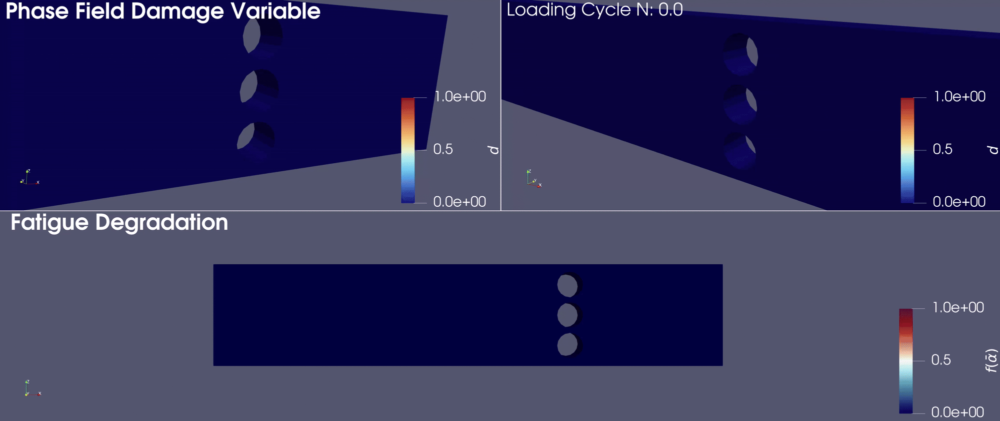

An open-source phase-field-based fatigue simulation tool
Fatigue failure occurs far more frequently in real-world applications than monotonic fracture, yet it remains underrepresented in most computational modeling frameworks.
Despite the abundance of ad hoc assumptions in academic theories, their real-world applicability still demands validation.
Felino bridges this gap by enabling multiphysics simulations that couple phase-field fracture, mechanical equilibrium, and thermal conduction systems.
The goal is to construct a unified platform for numerical fatigue analysis and bring state-of-the-art research closer to practical, industry-relevant applications.
